House Layout 使用教學
House Layout 是在瀏覽器裡畫室內平面配置圖的工具：匯入自己的房屋底圖，從元件庫拖拉床、沙發、衣櫃、書桌等家具，用實際公分評估空間感，再用分頁做出多個方案互相比較。
- 同一比例：家具、牆面都以公分繪製，有比例尺、量測工具與 1 cm 吸附。
- 建商平面圖風格：約 80 種元件，含弧形牆、弧形拉門與直線＋弧形的組合元件。
- 多方案比較：像 Excel 工作表的分頁，可疊圖或並排比較。
- 資料只在你的電腦：沒有後端，不需要註冊。
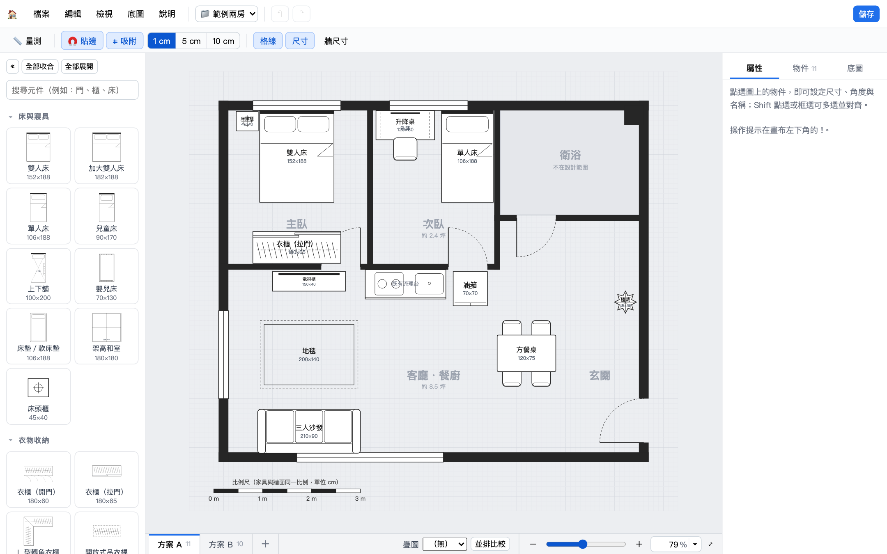
快速開始
第一次打開網站會出現匯入畫面，必須先有一張底圖（牆面與尺寸）才能開始設計。有五種方式：
- 匯入底圖或專案檔：本工具輸出的
.json。 - 上傳平面圖圖片：PNG／JPG。上傳後在圖上點兩個已知距離的端點（例如一面標有 360 的牆），輸入實際公分數，圖片就會依比例縮放，之後可描牆。
- 輸入外框尺寸：建立矩形外牆，再用「編輯底圖」加隔間與門窗。
- 從空白開始畫底圖：直接進入底圖編輯，用「畫牆」一面一面畫。
- 貼上 AI 產生的底圖：把平面圖或不動產說明書交給 AI，貼回結果即可（見 用 AI 產生底圖）。
還沒有平面圖？在匯入畫面點「先開啟範例專案試用」，會載入本教學使用的範例兩房（含兩個方案）。每次建立或開啟都會先請你為專案命名，並開成一個新專案，不會覆蓋原本的專案。
介面導覽
| 位置 | 內容 |
|---|---|
| 上方選單列 | 檔案（新專案、開啟、儲存、切換專案、匯出、列印）、編輯（復原、剪下、複製、貼上…）、檢視、底圖、說明；右側為專案切換、復原／重做與儲存。 |
| 工具列 | 📏 量測、🧲 貼邊、⌗ 吸附與精度（1／5／10 cm）、格線、家具尺寸、牆面尺寸。 |
| 左側元件庫 | 依分類收合（像 Visio），可搜尋；« 可把整個面板收起來。 |
| 右側面板 | 三個分頁：屬性（選取物件的設定或多選對齊）、物件（清單）、底圖（底圖資訊與操作）。 |
| 下方分頁列 | 每個分頁是一個設計方案；右側有疊圖與並排比較。 |
| 右下角縮放列 | 滑桿、＋／－、可輸入百分比，▾ 有 20%～100% 與全圖顯示。 |
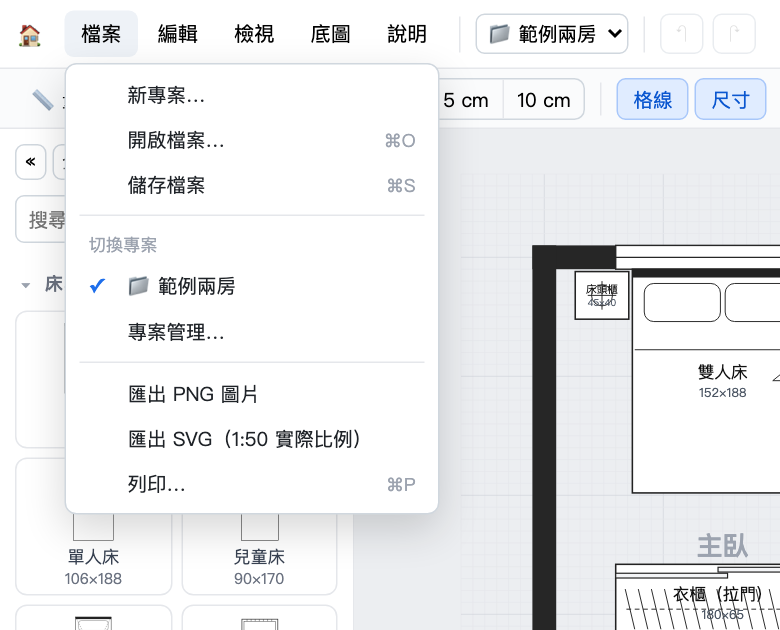
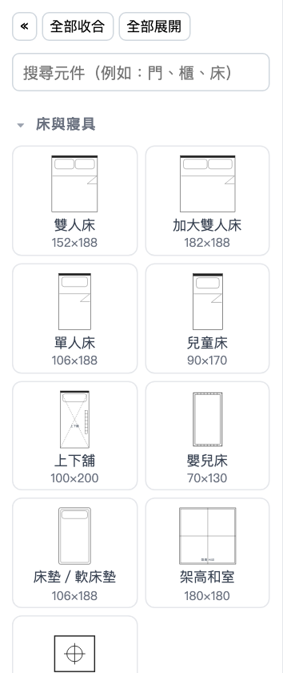
擺放家具
- 從左側拖拉元件到圖上，或點一下元件加到畫面中央。
- 拖曳物件移動；拖曳藍色方塊調整寬深；拖曳上方圓點旋轉（每 15°，按住 Shift 自由旋轉）。
- 右側「屬性」頁可直接輸入寬、深、角度、位置與名稱；沙發可設座位數、餐桌可設椅子數。
- 放進「不在設計範圍」（例如衛浴、陽台）的家具會以紅框提醒。
- 在物件上按右鍵：複製、剪下、貼上、再製、旋轉、鏡像、上下層、鎖定、刪除。
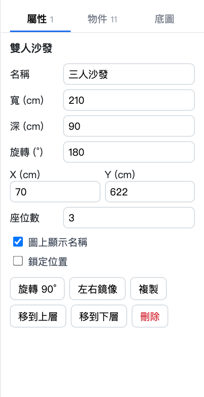
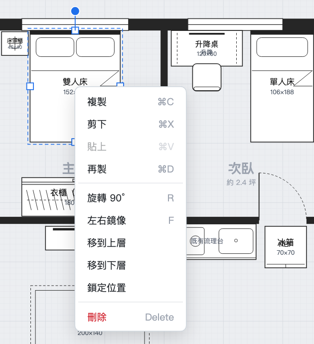
多選、對齊與貼合
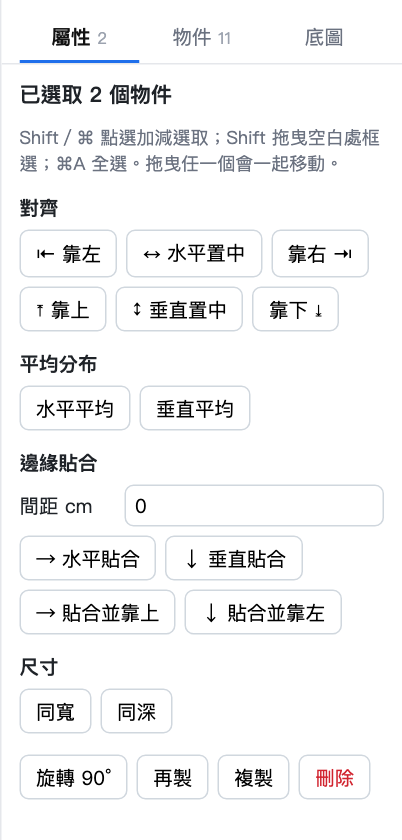
- 多選：Shift 或 ⌘ 點選、Shift 拖曳空白處框選、⌘A 全選。拖曳任一個會一起移動。
- 對齊：靠左、水平置中、靠右、靠上、垂直置中、靠下。
- 平均分布：3 個以上物件的間距相同。
- 邊緣貼合：依序緊貼排列，可設定間距（例如冰箱、電器櫃、高櫃排成一排）。
- 同寬／同深：以最後選取的物件為準。
- 拖曳貼邊：拖曳時邊緣靠近其他家具或牆面會自動吸附並顯示橘色線；按住 Alt 暫時關閉，或在工具列關掉「貼邊」。
弧形與組合元件
「門・牆・標示」分類裡有直線＋弧形拉門、直線＋弧形牆、直線＋弧形玻璃，它們是一個元件：由「直線 A → 弧形 → 直線 B」組成，在屬性頁設定直線長度、弧半徑、弧角度、彎向與厚度，外框會自動計算。適合轉角的弧形拉門、圓弧隔間或玻璃。
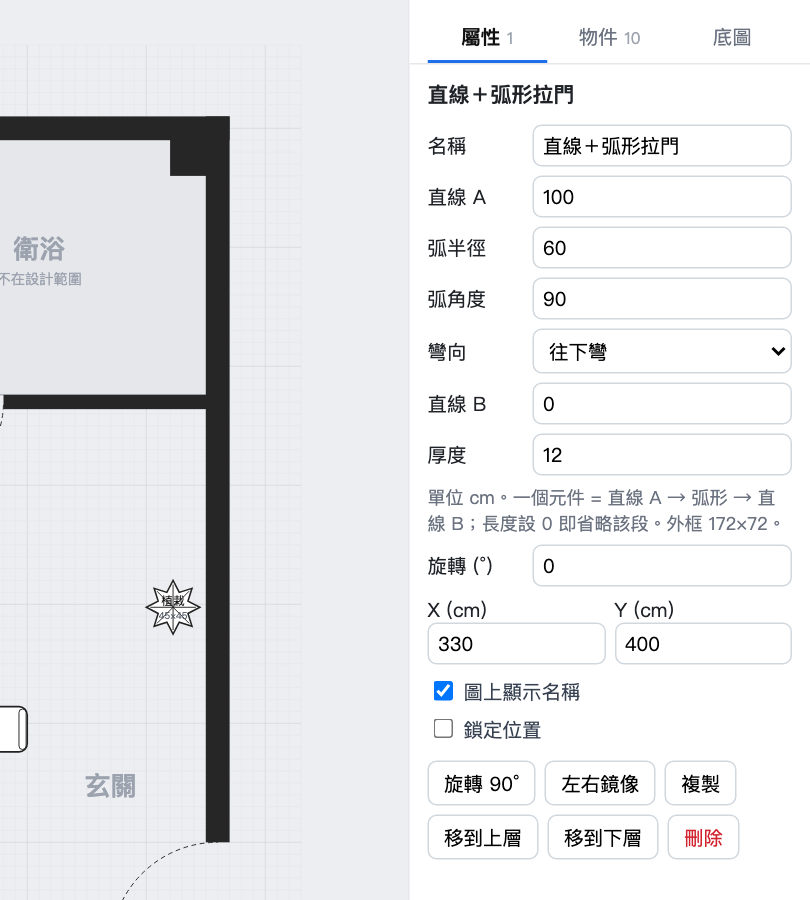
另有純弧形的「弧形拉門」「弧形牆」「轉角弧形化妝台」「轉角弧形櫃」：寬＝水平半徑、深＝垂直半徑，用旋轉或鏡像調整朝向。
量測與比例
- 所有元件與牆面使用同一比例（公分），左下有 0～3 m 比例尺。
- 按工具列 📏 量測 或 M，在圖上拖曳拉線即可看距離；Shift 鎖水平／垂直。
- 吸附精度可選 1／5／10 cm；放大到 250% 以上會顯示 1 cm 細格。
- 「牆尺寸」會顯示底圖檔附帶的牆面尺寸標註。
方案分頁與比較
- 一個專案（一間房子）可以有多個方案，畫面下方像 Excel 工作表：點選切換、雙擊改名、拖曳排序、按住 ⌥（Windows：Ctrl）拖曳複製、右鍵有更多操作。
- 所有方案共用同一張底圖；在「編輯底圖」修改牆面，每個方案都會更新。
- 疊圖：把另一個方案以紅色半透明疊在目前畫布上，直接看差異。
- 並排比較：所有方案並排顯示，附物件數量與清單，可直接切換。
- ⌘C／⌘V 可以跨方案複製家具。
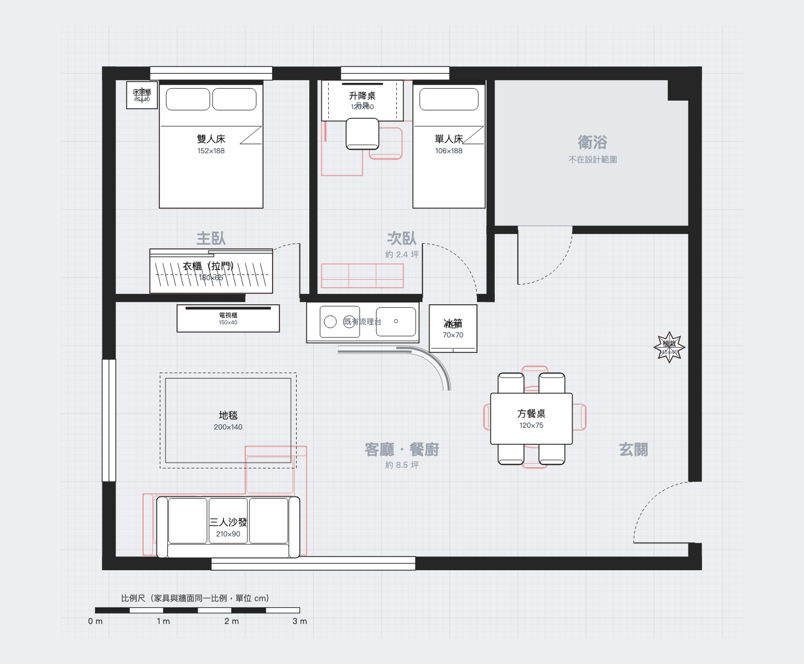
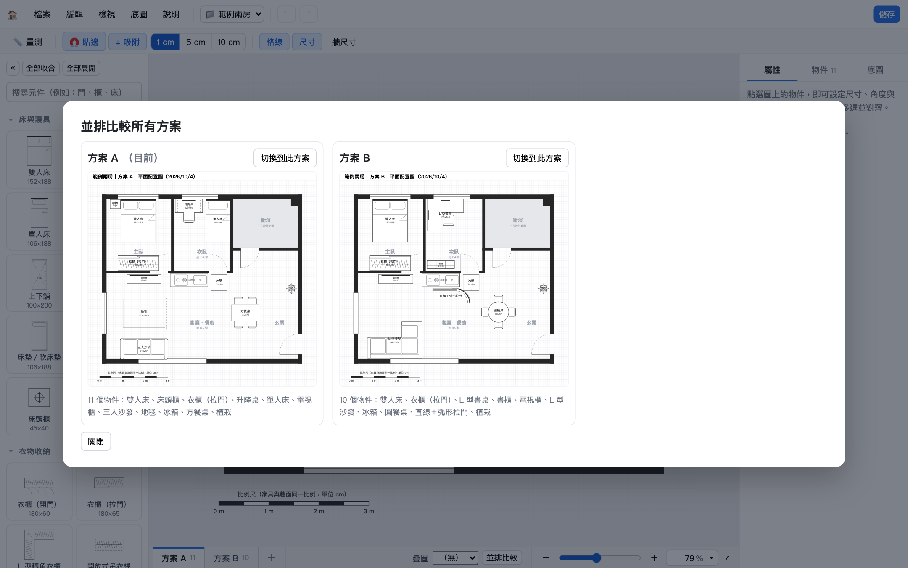
編輯底圖
從「底圖 → 編輯底圖」（或右側「底圖」頁的按鈕）進入。家具會變淡並鎖定，左側換成底圖工具：
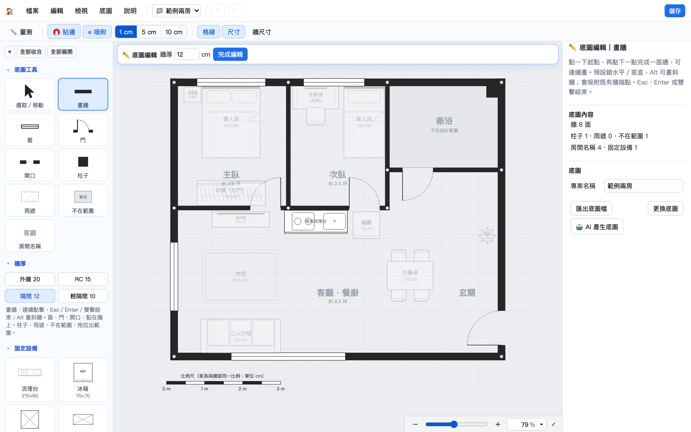
| 工具 | 用法 |
|---|---|
| 畫牆 | 連續點擊畫牆，預設鎖水平／垂直（Alt 斜牆），會吸附既有牆端點；Esc、Enter 或雙擊結束。牆厚可快選：外牆 20、RC 15、隔間 12、輕隔間 10。 |
| 窗／門／開口 | 點在牆上加入，再到右側調整位置與寬度；門可設定鉸鏈端與開向。 |
| 柱子／雨遮／不在範圍 | 拖拉出範圍。「不在範圍」可命名（衛浴、陽台…），家具放進去會紅框提醒。 |
| 房間名稱 | 點一下放置，可加副標（例如坪數）。 |
| 固定設備 | 流理台、冰箱、高櫃等，成為底圖的一部分，離開編輯後鎖定、所有方案共用。 |
| 選取 | 拖曳移動、拖牆端點調長度，Delete 刪除；⌘Z 可復原。 |
用 AI 產生底圖
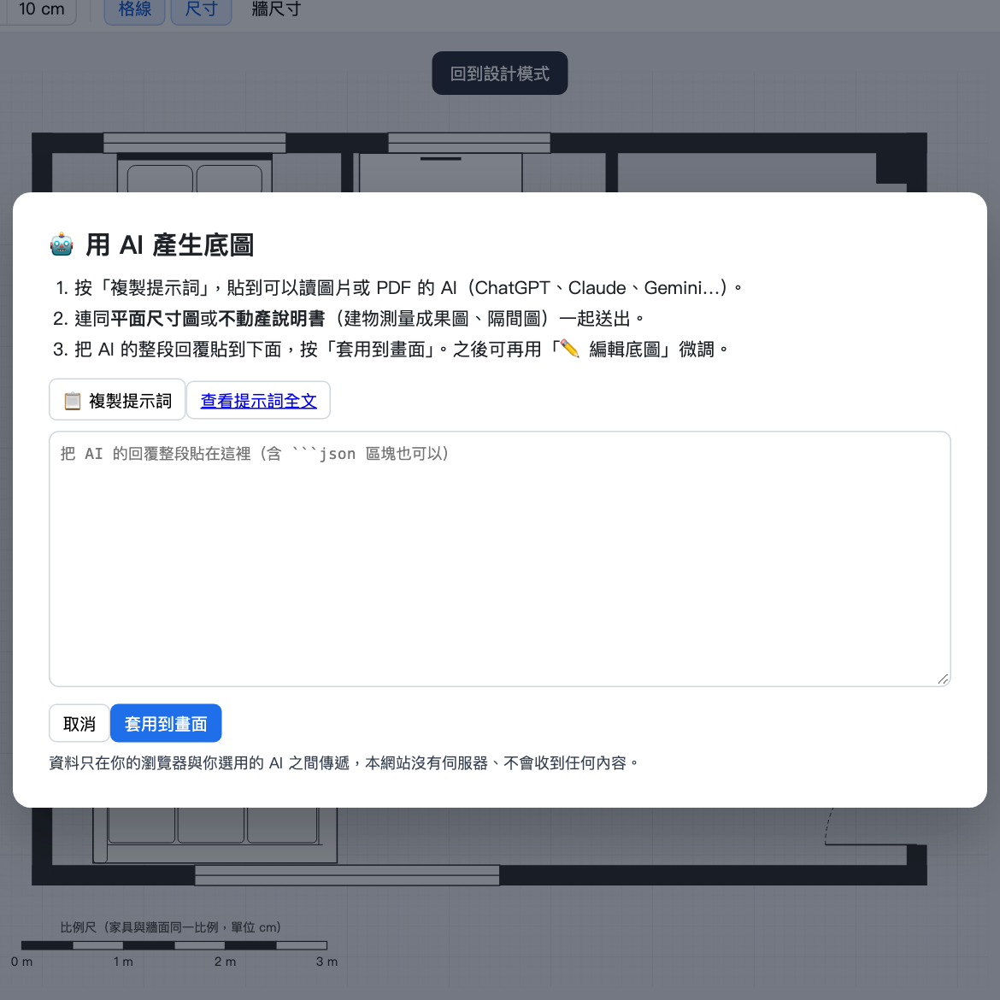
- 選「底圖 → AI 產生底圖」或匯入畫面的第 ⑤ 項，按「複製提示詞」。
- 貼到可讀圖片或 PDF 的 AI（ChatGPT、Claude、Gemini…），附上平面尺寸圖或不動產說明書（建物測量成果圖、隔間圖）。
- 把 AI 的整段回覆貼回來，按「套用到畫面」。
- 工具會自動抓出 JSON、修正小誤差（例如歪 2 cm 內的牆），提醒會列在右側「底圖」頁；再用「編輯底圖」微調。
提示詞全文：PROMPT.md。測量成果圖有明確尺寸，通常最準；隔間圖未依比例，位置請再量測核對。
專案、存檔與匯出
- 一個檔案就是一整個專案：「儲存檔案」（⌘S）把底圖、所有方案分頁與疊圖設定存成一個
.json；「開啟檔案」（⌘O）或把檔案拖進視窗，會命名後開成新專案。 - 瀏覽器會自動暫存所有專案，可從右上角 📁 切換；「檔案 → 專案管理」可重新命名或刪除。換電腦或備份請用「儲存檔案」。
- 匯出：PNG 圖片、SVG（1:50 實際比例，列印選 100%）、列印。
- 底圖可單獨匯出成底圖檔，給別人用同一張底圖做不同設計。
快捷鍵一覽
| ⌘Z ／ ⇧⌘Z | 復原／重做 | ⌘S ／ ⌘O | 儲存／開啟 |
| ⌘C ⌘X ⌘V | 複製、剪下、貼上 | ⌘D | 再製 |
| ⌘A | 全選 | Delete | 刪除 |
| R ／ ⇧R | 旋轉 90°（反向） | F | 左右鏡像 |
| 方向鍵（Shift ×10） | 微調位置 | M | 量測 |
| Shift／⌘ 點選 | 加減選取 | Shift 拖曳空白處 | 框選 |
| 拖曳時按 Alt | 暫停貼邊 | Esc | 取消選取／關閉選單 |
| 底圖編輯中：V 選取、W 畫牆、Esc／Enter 結束畫牆。Windows 請把 ⌘ 換成 Ctrl。 | |||
隱私
House Layout 是單一靜態網頁，沒有後端、沒有追蹤程式。你的底圖與設計稿只存在瀏覽器（localStorage）與你下載的檔案中，不會上傳到任何伺服器。使用 AI 產生底圖時，資料只在你與你選擇的 AI 服務之間傳遞。
開發者
Josh Tsai（@u9951064）・原始碼與問題回報：github.com/u9951064/house-layout・MIT License